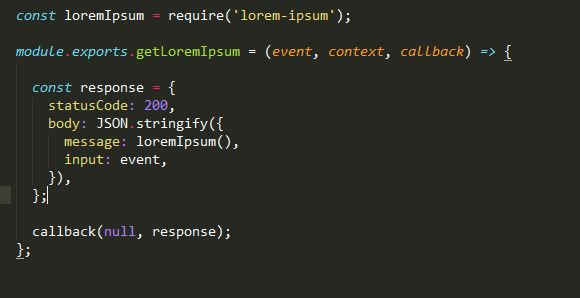
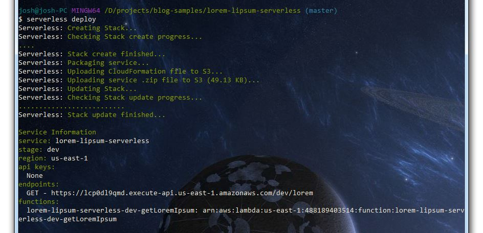
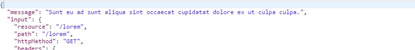
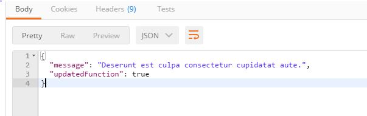
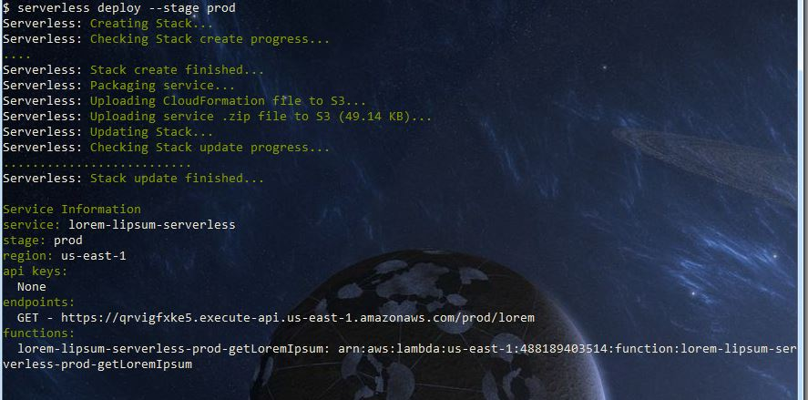
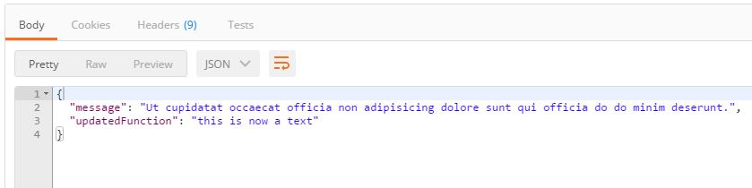
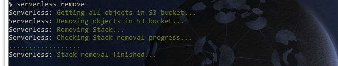

Serverless - Making lambda deployments easy
In my last post I worked on my first lambda function and went through the process of manually setting up the function, gateway and roles. While this works it does slow down development considerably and I can see it quickly becoming a pain in the arse especially when dealing with different environment’s when releasing changes.
In comes Serverless which is a framework to help you develop and deploy serverless architectures in AWS. It’s built on Node.js and currently only supports python and node runtime environment’s however the others are in the works.
It sounds fairly decent so thought I’d try it out by switching the lorem-lipsum function I created in my last post to use it.
First up I installed the framework using npm following the instructions here
Once installed I created the serverless.yml file with the following settings
service: lorem-lipsum-serverless
frameworkVersion: "=1.2.1"
provider:
name: aws
runtime: nodejs4.3
memorySize: 128
functions:
getLoremIpsum:
handler: handler.getLoremIpsum
events:
- http:
path: lorem
method: get
With this file i’m creating the http endpoint ‘/lorem’ which is mapped to the function getLoremIpsum which is below

I’v now got the mappings and function but before I can deploy I need to create an AWS user that has all the permissions required to create and delete the stacks.
I added the json that I used to create the 6 policy’s that I have added to my user here once done I set my awscli to use the user I just created.
I’v now got my mappings, the function and all the permissions I need so now time to deploy it!
This is as easy as running the command serverless deploy

And the result

Hmm but now I wanted to make a change to the function to return a different response. After making the code changes and re-running the command it has been updated

By default when running serverless deploy it stages it as dev so now that the response is all good I wish to deploy it to prod
serverless deploy --stage prod

I now have two different environments so that I can make code changes to dev and test them without effecting prod.
After running serverless deploy again my dev env reflects the changes

While the prod env is still returning the same response as what I deployed earlier.
Once finished It’s just as easy to tear down and delete all traces of the stack by running the command
serverless remove

While this was a fairly simple and small test the serverless framework does appear to do the job in helping to deploy the stacks with different stages and i’ll be using it in the future :D.
The sample code can be found here